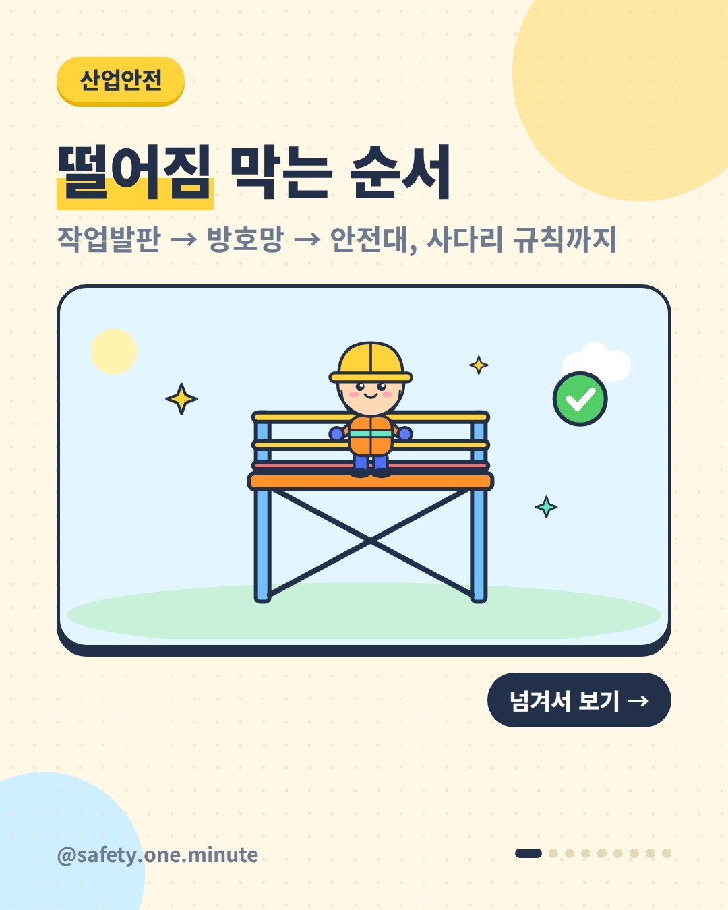
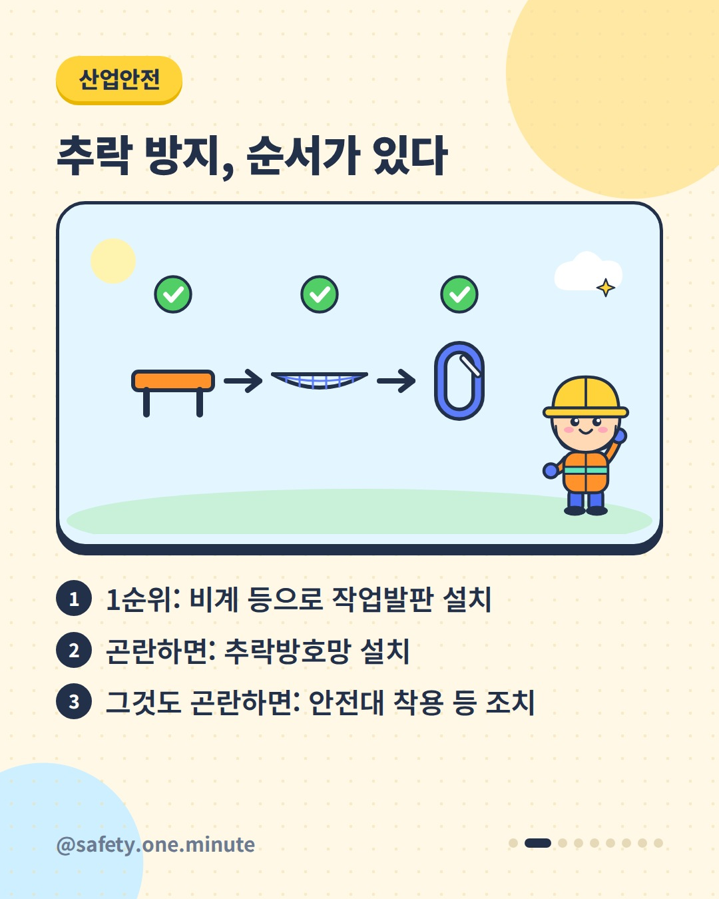
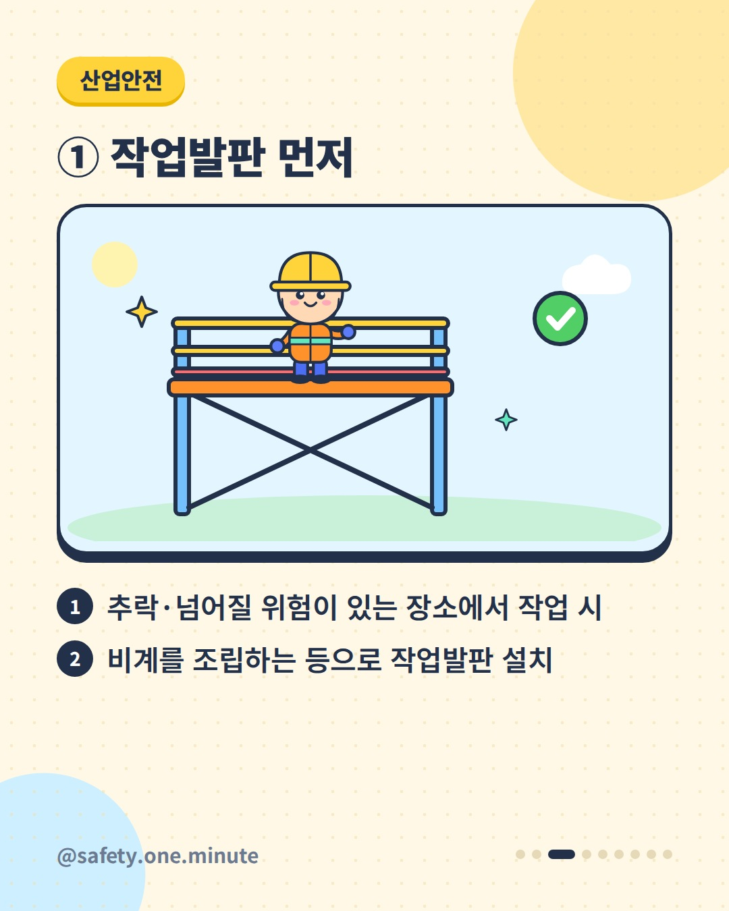
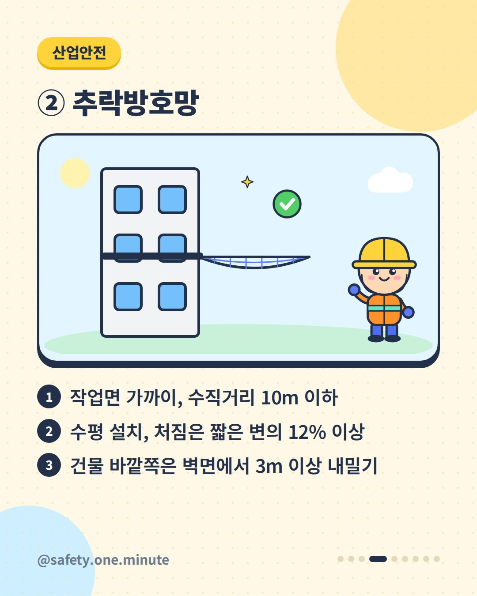
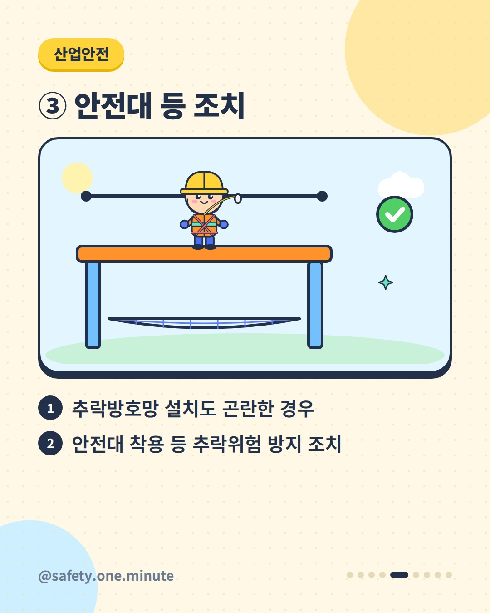
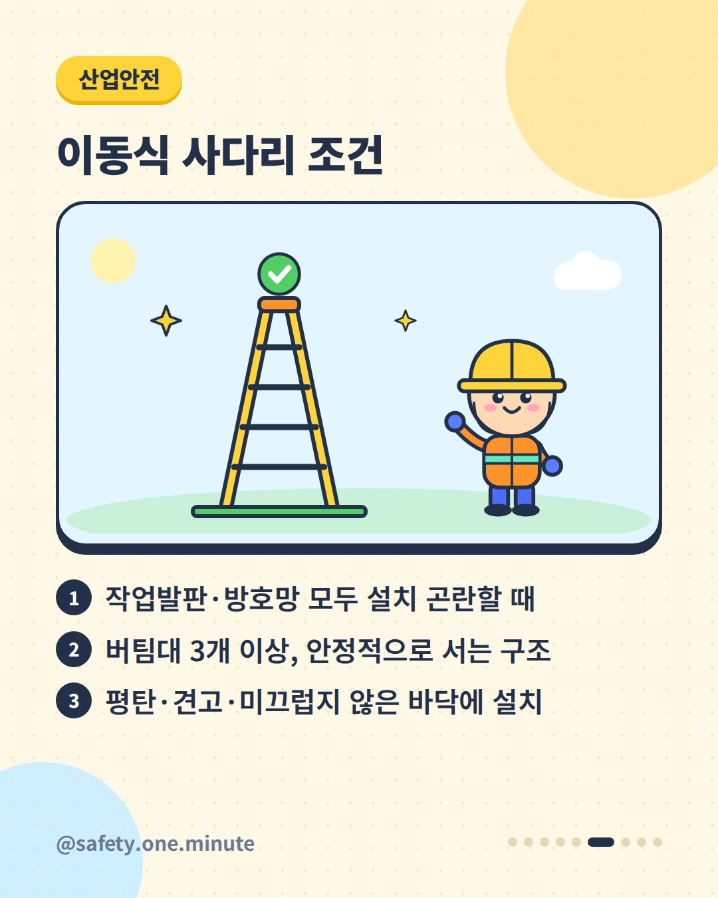
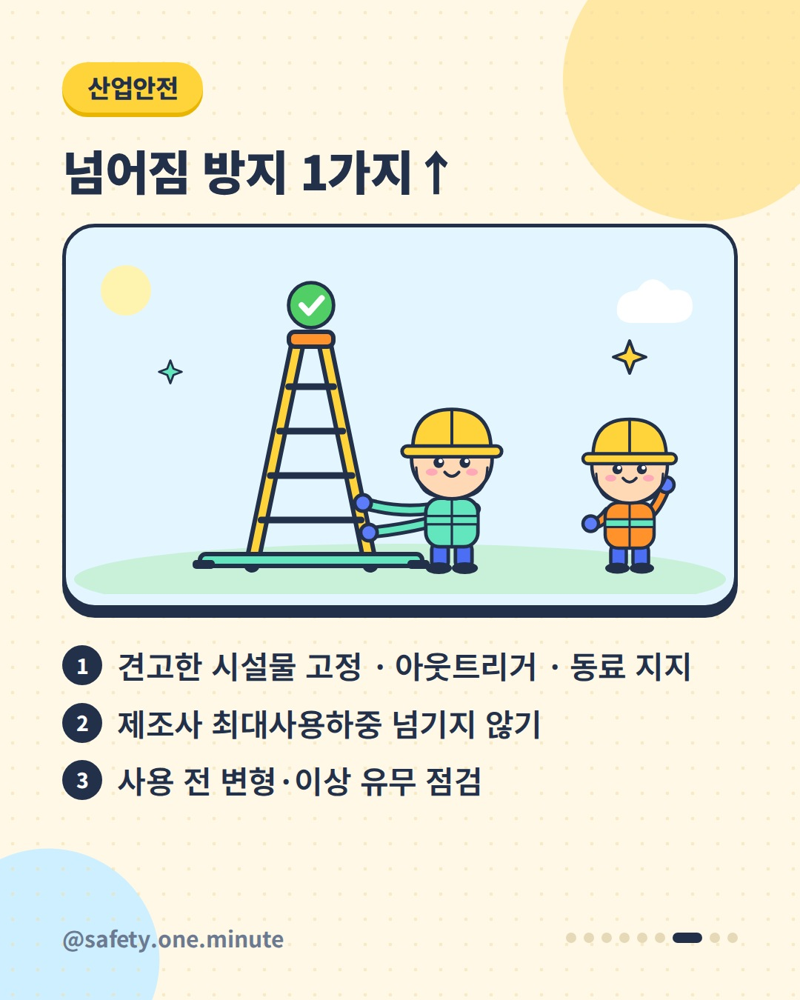
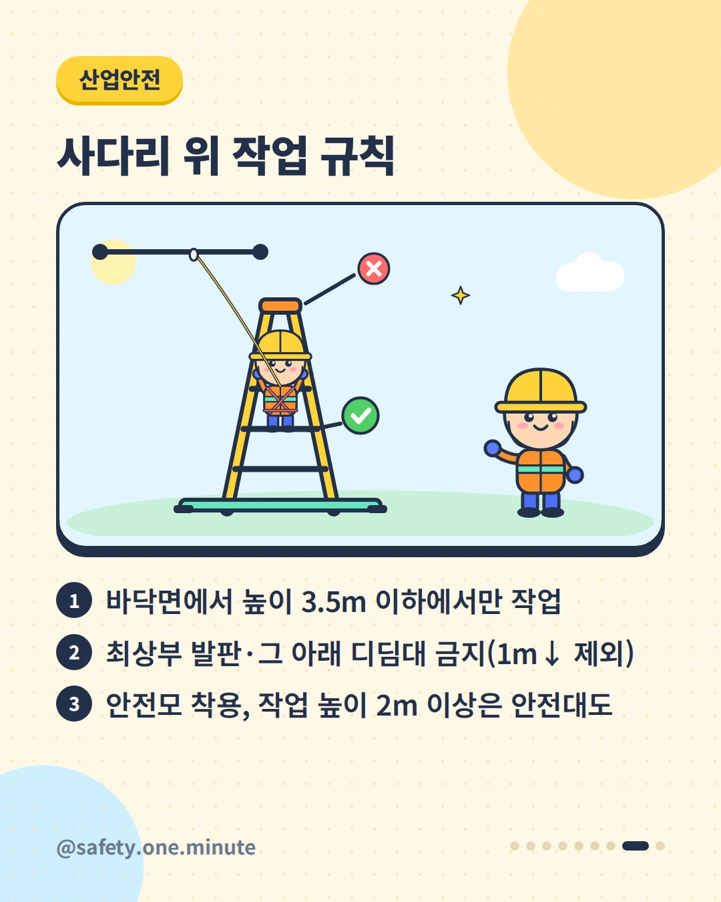
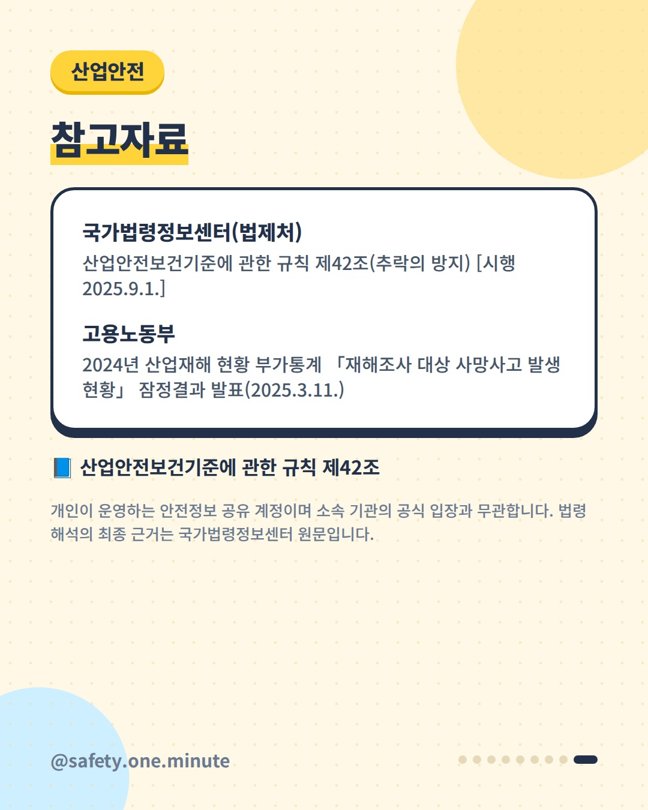

떨어짐 막는 순서 — 9장 (4:5)









캡션
높은 곳 작업, 안전대만 차면 될까요? 산업안전보건기준에 관한 규칙 제42조는 추락 위험이 있는 곳에서 작업할 때 지켜야 할 순서를 정하고 있습니다. ① 먼저 비계를 조립하는 등의 방법으로 작업발판을 설치합니다. ② 작업발판 설치가 곤란하면 추락방호망을 설치합니다. 작업면 가까이(수직거리 10m 이하) 수평으로, 망 처짐은 짧은 변 길이의 12% 이상으로 하고, 건축물 바깥쪽은 벽면에서 3m 이상 내밀어 설치합니다. 방호망은 한국산업표준 기준에 맞는 제품을 씁니다. ③ 방호망 설치도 곤란하면 안전대를 착용하게 하는 등 추락위험 방지 조치를 합니다. 작업발판과 방호망 모두 설치가 곤란하면 버팀대 3개 이상으로 안정적으로 서는 이동식 사다리를 쓸 수 있습니다. 이때 평탄하고 견고하며 미끄럽지 않은 바닥에 설치하고, 고정·아웃트리거·동료 지지 중 하나 이상으로 넘어짐을 막고, 높이 3.5m 이하에서만 작업합니다. 최상부 발판과 그 아래 디딤대에 올라서지 않고(1m 이하 사다리 제외), 안전모를 쓰고 작업 높이가 2m 이상이면 안전대도 착용합니다. 고용노동부 발표(2025.3.)에 따르면 2024년 재해조사 대상 사고사망자는 589명(잠정)이었습니다. ※ 세부 요건은 법령 원문(2025.9.1. 시행본 기준)을 확인하세요. 출처: - 국가법령정보센터(법제처) – 산업안전보건기준에 관한 규칙 제42조 - 고용노동부 – 2024년 재해조사 대상 사망사고 발생 현황 잠정결과(2025) 개인이 운영하는 안전정보 공유 계정이며 소속 기관의 공식 입장과 무관합니다. 법령 해석의 최종 근거는 국가법령정보센터 원문입니다. #추락방지 #작업발판 #추락방호망 #안전대 #이동식사다리 #사다리안전 #산업안전 #산업안전보건기준에관한규칙 #고소작업 #건설안전 #안전수칙 #현장안전 #안전보건 #떨어짐